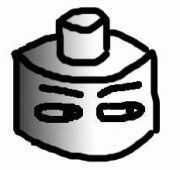
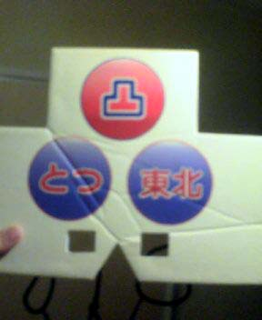
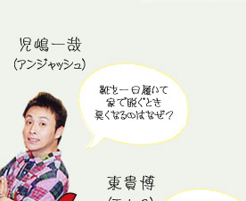
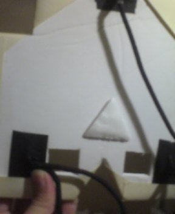
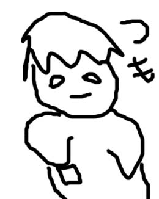

麻雀異種格闘技戦！！マーチャオCUP
ということで、テレビに出てプロと麻雀対局をしてまいりました。
モンドホームページへいって「マーチャオCUP」の番組をチェーック！
放送日は以下のとおりです。
第一話 3月1日20時〜
第二話 3月8日20時〜
第三話 3月15日20時〜
第一話 3月2日11時〜
第二話 3月9日11時〜
第三話 3月16日11時〜
第一話 3月3日14時〜
第二話 3月10日14時〜
第三話 3月17日14時〜
え〜と、経緯を言いますと。
フリー雀荘チェーン「マーチャオ」

の
・麻雀プロ２名
・女流２プロ名
・芸能人２名
・ネット雀士２名
での異種格闘技戦をやろう、ということになったのだ。
とりあえず私が「顔出しはやだなぁ」とゴネていたら、製作会社から「美術担当に凸のお面作らせますよ」との声。
なんてステキ・・・さすがテレビ。
金かかってるな。
どの程度、

このイメージに近いリアルな凸お面ができるのかな！！
ワクワク。

面。（完成ヴァージョン）

こっ・・・これをかぶるのか――――――――――――――！！
おい！ 製作会社の「美術」！
誰がこんなシュールレアリズムなやつを作れと！
ダンボール切ってきましたよ、ダンナ、みたいな完成度やんけ！！
ドラクエのアイテムやったら「はずかしきおめん」とかの名前やよこれ！
この面をかぶって参加する雀士は、決してネット麻雀のカリスマなどではない。
単に MAN in MEN でしかない。
しかも、もう一人のネット雀士（MJで全国ランクで最強、神と名を馳せた）「教室生ヨウ」氏は、普通に顔を出している。
つまり私は、「なぜ面をつけているのかまでは存じないが、恥ずかしい人」、あるいは、「見ているこっちが赤面しちゃうような面をつけた男」でしかないのだ。
はめられた―――――――――――――！！！
ともあれ、対局相手を紹介しよう！
まずは女流から。

向かって左が 成瀬朱美プロ（blog）。右が、上田唯プロ。
ううむお二人とも美人で・・・思わず「上田プロだワン！」と言いそうになりました（謎）
芸能人からは麻雀界ではおなじみの坂上忍氏、

それから、アンジャッシュの児嶋氏

が参戦。（※写真はネットから拾ったものです。著作権法上の問題があればご指摘ください。ただちに削除します）
個人的には、アンジャッシュが大好きで。ピーポー君のネタとか最高。
昔からチェックしまくっていたアンジャッシュと待ち時間とか普通にしゃべってしまい、緊張してしまって、何話したか覚えてねぇ(笑)
もっとちゃんとボケたかった！！！（涙）
前回のプロとの公開対局では、50人を超える観客がいる中、対局中に緊張してしまってプルプル震えた私だが(笑)、今回は待ち時間から真っ白だったわけだ。
だが、しかーし！
対局に入ると卓しか見ない（表情とか見ない）ので、私は今回、プルプルせずに打てました。
これまでプロとの公式な（一般メディア上での）対局が３戦１勝２敗という私。
このあたりで取り返さなければ。
結果はどうなったか！？
それは以下日程で放送されるモンドにて！！
第一話 3月1日20時〜
第二話 3月8日20時〜
第三話 3月15日20時〜
第一話 3月2日11時〜
第二話 3月9日11時〜
第三話 3月16日11時〜
第一話 3月3日14時〜
第二話 3月10日14時〜
第三話 3月17日14時〜
モンドホームページへいって「マーチャオCUP」の番組をチェーック！
ちなみに、例の面のゴムが死ぬほどキツくできていて、鼻が痛くて痛くてしょうがなかった。

面の裏を見ると、微妙に「鼻ガード」がついている。
美術担当の心優しさを感じながらも、他方、この程度の鼻ガードではゴムによる垂直抗力の生じせしむる苛烈な力の前には何の効果もないのだ、それはまるでちっぽけな人間が大災害の前には抗いようもなくまったく無力な存在へと変貌するのと同様に……といった苦痛と無力感を、ほかならぬ鼻で感じつつ対局を終えた私であった。
というかよく見ると鼻ガードではなく「額ガード」である。ここを力点とすることで、実は鼻へのダメージは増えてさえいるのである。
美術め。。。
ん、男性プロの紹介がまだ？
あ、そう。

こんな感じのが２名ですよ。
え、よくわからない！？
いや、だいたいこんなもんでしょ？
フィーリングでわかれよ。流れとか感じてよ。
しゃーねーなぁ。
いつもつるんでる麻雀激ウマの、

小林 剛（こばやし ごう）氏
と、
雑誌連載などでも活躍、

貴田 紘太（きだ こうた）氏
でした。
ちなみに貴田氏は医学部出の研修医で、劣等感を感じたのでわざとちょっとブサイク目な写真を掲載しています♪ ← あいかわらず最低でしょ♪
興味をもたれた方は、ぜひネットで彼らの活躍を探してみてくださいね〜〜。
それではお面の中から、さようなら〜（まっとうな人生から永遠に）。